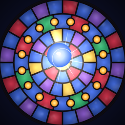

GLASSFALLSupportPrivacyHow can we help?
Email brax6@icloud.com with your device and iOS version. We answer within two business days.
Purchases
Something you bought is missing. Open Settings (the gear on the title screen) and tap Restore Purchases. No Ads and the Glazier's Kit return on any device using the same Apple Account. Shard pouches are delivered once per purchase.
A purchase gone wrong? Apple looks after refunds; ask at reportaproblem.apple.com.
Ads
Ads only appear between vigils, never during one. Ads you choose to watch (Second Light, rerolls, double shards) are always optional. No Ads removes the others and makes those rewards free. Where required, change your ad choices under Settings › Ad Privacy Choices.
Your progress
Shards, Kiln upgrades and a vigil in progress are saved on your device. They live nowhere else, so removing Glassfall clears them for good.
How to play
Drag on the window to aim and let go to drop. Gold panes make the shot critical, emerald panes restore the board, leaded panes burst on a second strike, and the chalice at the bottom blesses an orb for +50% damage.